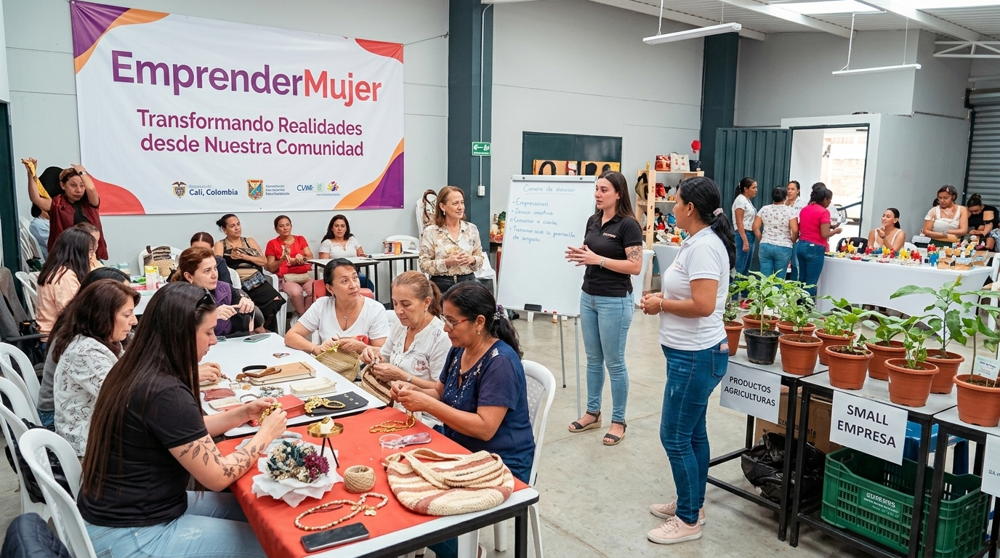

🌷 Comunidad • Educación • Emprendimiento
Mujeres que Lideran el Desarrollo
Impulsando la autonomía financiera, el conocimiento y el espíritu emprendedor de las madres cabeza de hogar en Morichal de Comfandi.
🌷 Comunidad • Educación • Emprendimiento
Impulsando la autonomía financiera, el conocimiento y el espíritu emprendedor de las madres cabeza de hogar en Morichal de Comfandi.

NUESTRA COMUNIDAD
Mujeres que lideran el desarrollo es una iniciativa comunitaria creada en alianza con la JAC Morichal de Comfandi Sector 2B.
Nuestro propósito es brindar herramientas prácticas en educación financiera, gestión de negocios y herramientas digitales a las madres cabeza de hogar de Cali.
Creemos firmemente que al capacitar a una mujer, impulsamos el progreso de toda una familia y dinamizamos la economía del sector.
¿CÓMO TE AYUDAMOS?
Queremos acompañarte en cada paso para que puedas convertir tus conocimientos, ideas y talentos en nuevas oportunidades.
Cursos cortos y accesibles sobre finanzas personales, costos, precios e inventarios, diseñados para aprender a tu propio ritmo.
Te guiamos paso a paso para estructurar tu emprendimiento, desde el cálculo de tus ganancias hasta la creación de tu marca.
Publica tus productos o servicios en nuestro catálogo local para que la comunidad conozca y compre tu trabajo.
Conecta con otras madres emprendedoras del sector, comparte experiencias y crea alianzas que fortalezcan tu negocio.
NUESTRO PROPÓSITO
Madres capacitándose
Acompañamiento comunitario y gratuito
Comunidad unida por el progreso